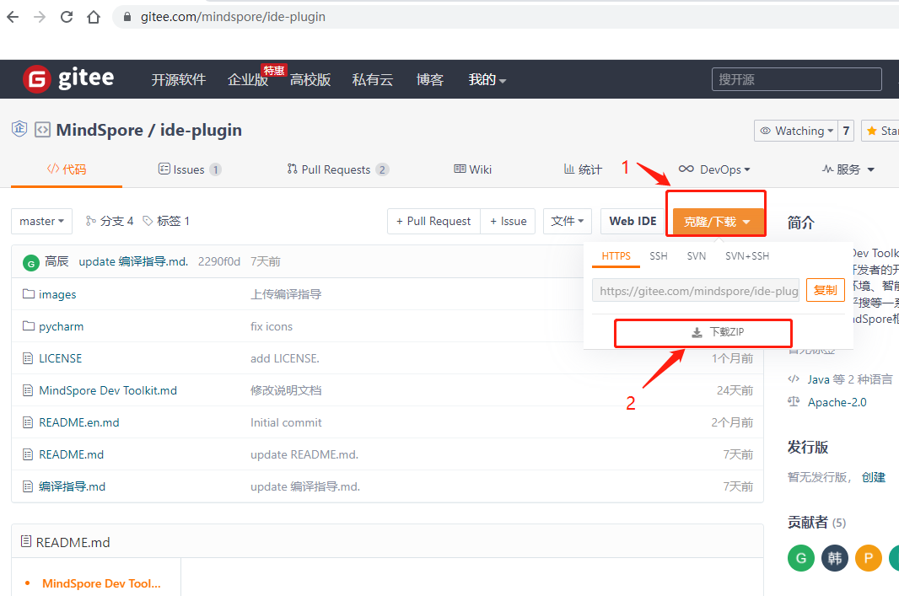
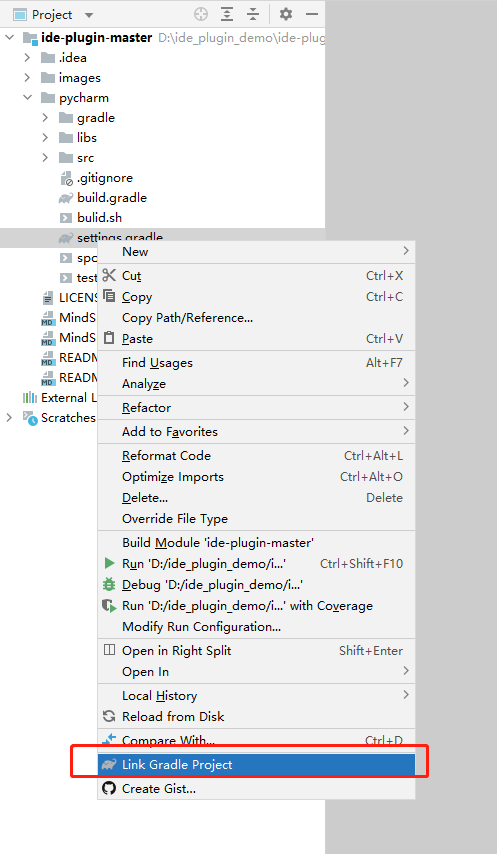
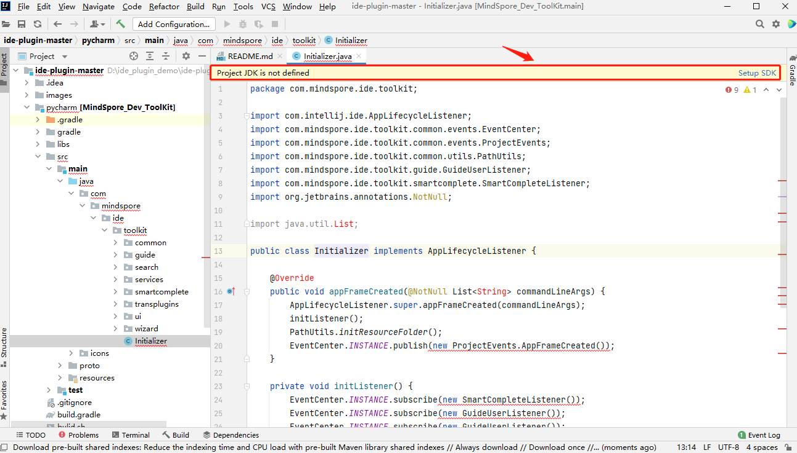
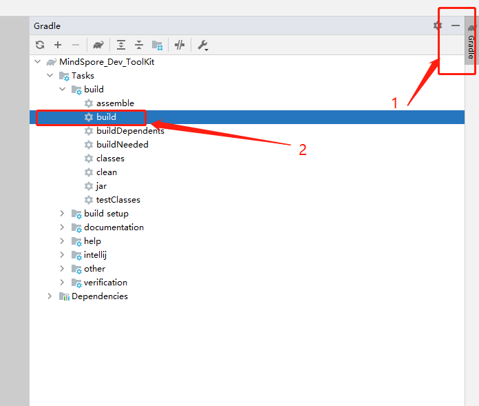
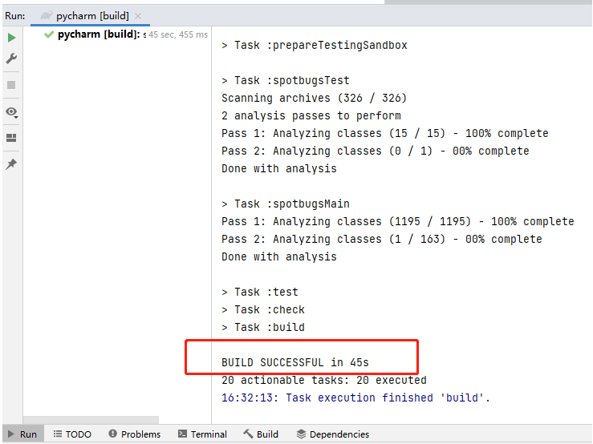

源码编译指导

本文档介绍如何基于IntelliJ IDEA源码编译MindSpore Dev ToolKit项目。
背景介绍
MindSpore Dev ToolKit是一个PyCharm插件，需使用IntelliJ IDEA开发。IntelliJ IDEA与Pycharm均为JetBrains公司开发的IDE。
MindSpore Dev ToolKit 基于JDK 11开发。 如果您不了解JDK，请访问https://jdk.java.net/了解并学习JDK以及java的相关知识。
MindSpore Dev ToolKit使用Gradle6.6.1构建，但无需提前安装。IntelliJ IDEA会自动根据代码使用”gradle wrapper”机制配置好所需的gradle。
依赖软件
确认安装IntelliJ IDEA。
确认安装JDK 11版本。
注：2021.3版本的IntelliJ IDEA自带一个名为jbr-11 JetBrains Runtime version 11.0.10的JDK，可以直接使用。
编译
保证依赖软件均已成功配置。
从代码仓下载本项目源码。
直接下载代码的zip包。

使用git下载。
git clone https://gitee.com/mindspore/ide-plugin.git
使用IntelliJ IDEA打开项目。
3.1 选择File选项卡下的Open选项。File -> Open

3.2 打开下载项目文件位置。

3.3 点击右下角弹窗中的load或右键pycharm/settings.gradle文件选中Link Gradle Project。


如果提示没有JDK，请选择一个JDK。有JDK可以跳过此步骤
4.1 没有JDK情况下，页面如下图显示。

4.2 File->Project Structure。

4.3 选择JDK11。

等待同步完成。

构建项目。

构建完成。

构建完成后至项目目录下/pycharm/build/distributions目录下获取插件安装包。

相关参考文档
本项目构建基于IntelliJ Platform Plugin SDK之Building Plugins with Gradle章节。如需了解调试等进阶功能，请阅读官方文档。